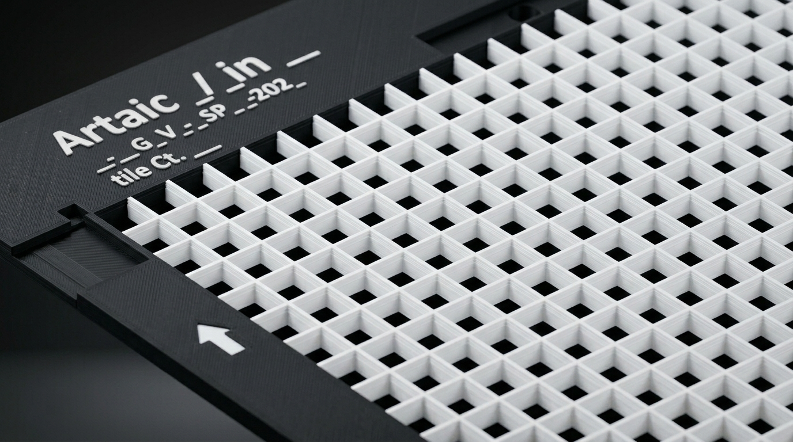
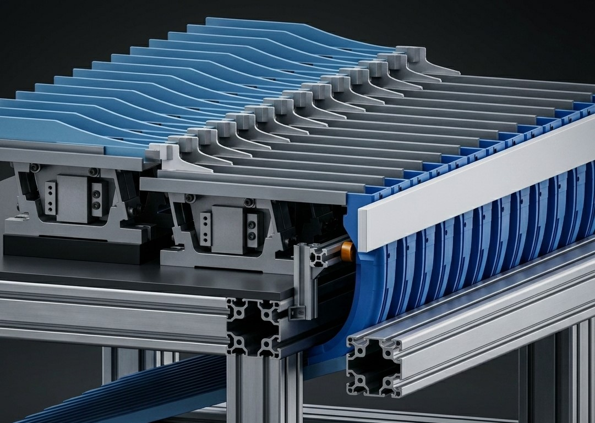

Systems Specialist / Parametric Designer Projects
SYSTEMS-LEVEL ENGINEERING WORK
Parametric design platforms, manufacturing workflow analysis, fixture development, and automation planning shaped around repeatability, scalability, and operational impact.

01 / Parametric Design Platform
Parametric Grid Generation Platform
Developed a configurable Onshape framework that turned repetitive mosaic grid modeling into
a rule-based design platform supporting scalable, manufacturing-ready outputs.
VIEW PROJECT

02 / Manufacturing Systems Analysis
Artemis Return Chute Optimization
Conducted a system-level investigation of production variability across equipment behavior,
operator interaction, material flow, and downstream recovery processes.
VIEW PROJECT

03 / Fixture Development
WAT Grid Bracket Development
Designed a standardized production fixture that constrained grid position and orientation,
reduced operator dependency, and added passive debris management.
VIEW PROJECT

04 / Robotics Exploration
Cooper V1
A 6-axis robotic arm simulation environment for validating automation logic before physical deployment.
The system supports reach checks, timing studies, and early integration planning.
CASE STUDY